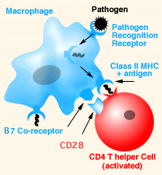
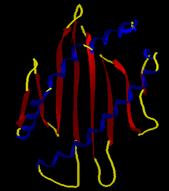
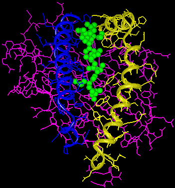

|
Tutorial to help you answer the question:
The significance of the major histocompatibility complex (MHC) in the immune
response:
| A. |
Serves to minimize autoimmunity or "self-reactivity" of the immune system |
| B. |
Serves to present fragments of antigens to T-cells. |
| C. |
Used by helper T-cells to regulate the expansion of antibody producing B-cells. |
| D. |
All of the above. |
Tutorial
|
The major histocompatibility complex (MHC) is a series of
genes that code for cell surface proteins which control the
adaptive immune response. The system is called H2 in mice
and HLA (human lymphocyte antigen) in humans. Class I MHC
contains three genes called HLA-A, B, and C; proteins from
these genes are expressed on almost all cells. Class II MHC
genes are called HLA-DR, DQ, and DP; their proteins are expressed
on antigen-presenting macrophages, dendritic cells and B cells.
The function of these proteins is to present fragments of antigens to T cells.
The receptor of T cells can only recognize antigen fragments
in complex with MHC proteins.
|
|  |
Following phagocytosis of a pathogen, fragments of the pathogen
are complexed with MHC proteins and displayed on the surface
of the macrophage or dendritic cells of the innate immune
system. If the cell encounters a dangerous pathogen, a co-receptor
called B7 is produced. This is a crucial step for turning
on the adaptive immune response and developing a memory of
pathogen threats. Those helper T cells with a receptor that
recognized the antigen fragment of the MHC complex can be
stimulated to proliferate and be activated if the co-receptor
is also displayed.
The dendritic cell of the innate system is used to initiate
adaptive immunity.
|
| Following activation by an antigen presenting cell, the Helper
T cell signals B cells and cytotoxic T cells to launch an immune response. This
activation of helper T cells occurs in the lymph nodes. Following activation is
another clonal selection, and helper T cells with the correct receptor are activated
and proliferate. |
Additional detail of MHC molecule/antigen binding
|

|
The space between the helices of this class I MHC molecule (HLA-A2) can bind
peptides inside the cell and carry them to the cell surface. This is the form
recognized by the T cell receptor on cytotoxic T cells. Class II have similar
structures, but are specific for presenting antigen fragment to helper T cells.
|
| Class I MHC molecule complexed with a peptide from HIV. A
helper T cell would recognize this complex on the surface of
an antigen presenting cell before a cytotoxic T cell destroys
this HIV infected cell. |
 |
|